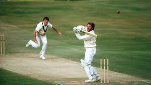
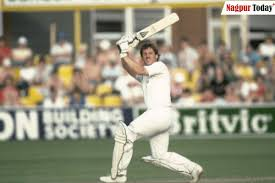

Ian Botham
Role: All-Rounder
Bio: Ian Botham, often referred to as "Beefy," is regarded as one of the greatest all-rounders in cricket history. He played a pivotal role in England's cricketing success during the 1980s and is celebrated for his aggressive batting and wicket-taking ability.
Career Stats
| Format | Matches | Innings | Not Outs | Runs | High Score | Average | Strike Rate | 100s | 50s | Wickets | Best Bowling |
|---|---|---|---|---|---|---|---|---|---|---|---|
| Test | 102 | 156 | 24 | 5200 | 208* | 33.54 | 54.33 | 16 | 22 | 383 | 8/34 |
| ODI | 116 | 102 | 21 | 2113 | 137 | 23.41 | 72.37 | 1 | 9 | 145 | 5/27 |
Memorable Moments

Botham's incredible performance in the 1981 Ashes series, where he inspired England to an improbable victory.
His iconic innings of 149 not out against Australia at Headingley, which is one of the most celebrated Test performances.